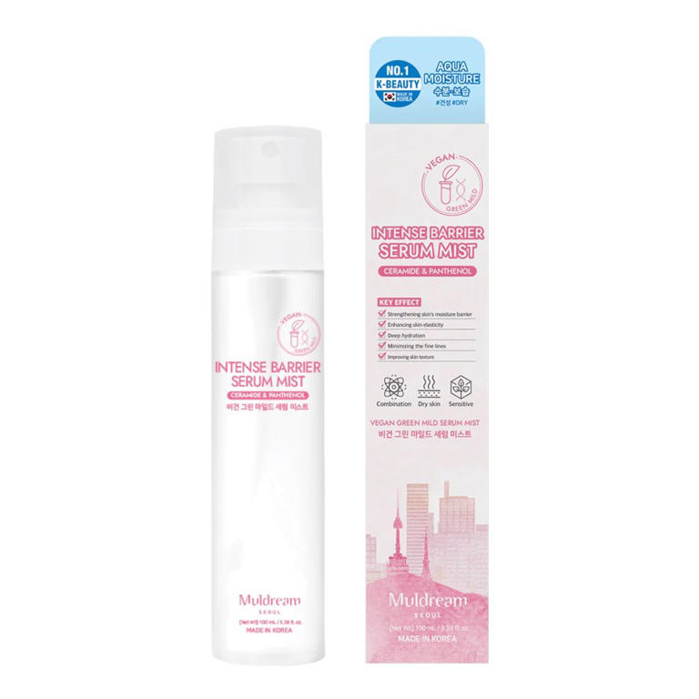

Nuestros periodistas recomiendan de manera independiente productos y servicios que puedes comprar o adquirir en Internet. Cada vez que compras a través de
algunos enlaces añadidos en nuestros textos, Condé Nast S.L. puede recibir una comisión. Lee aquí nuestra política de afiliación.
Puede que su nombre, houttuynia cordata, te parezca impronunciable. De hecho, lo es. Llevo utilizándola en mi piel grasa durante casi siete meses y todavía se me
traba la lengua. También se la conoce con otros nombres, por si te resulta más fácil: hierba de pescado, planta camaleón o heart leaf, como la llaman en inglés.
Pero ya lo decía Shakespeare -fuera cual fuera su verdadera identidad-: “Si la rosa tuviera otro nombre, aun tendría la misma fragancia”. Así que, puedes referirte
a ella como desees, pero seguirá teniendo las mismas propiedades, que son muchas. Y lo cierto es que, en un mundo cosmético rendido a activos cada vez más
trabajados en un laboratorio -cosa que también nos encanta-, proporciona algo de consuelo que se pueda volver la vista a la naturaleza y rescatar una planta que el
mundo asiático lleva siglos utilizando. En este punto es donde nos miramos, una vez más, en el fascinante espejo de la cosmética coreana, recurso interesante más
allá del marketing donde los haya.
Es una planta herbácea perenne con flores, que crece en zonas húmedas y oscuras en el este y sureste asiático, y que recibe su peculiar nombre de del naturalista holandés Martinus Houttuyn. "Se ha utilizado en la medicina tradicional asiática durante siglos y recientemente ha ganado popularidad en productos de belleza", nos cuenta Paula Rodríguez, bioquímica especializada en dermofarmacia y cosmética y portavoz de Planet Skin. Por supuesto, la cosmética coreana no tardó en fijarse en ella: “Es una planta medicinal ampliamente utilizada en la cosmética coreana debido a sus propiedades calmantes, antioxidantes y antiinflamatorias. En particular, este ingrediente comenzó a popularizarse en productos para piel sensible y con tendencia acneica hace más de una década”, explica Lilin Yang, cofundadora y CEO de MiiN Cosmetics. Propiedades y beneficios de la houttuynia cordata Atenta, porque vas a comprobar que esta planta no sólo está indicada para los problemas más típicos de las pieles grasas, sino que va un paso más allá. A las pruebas nos remitimos:
